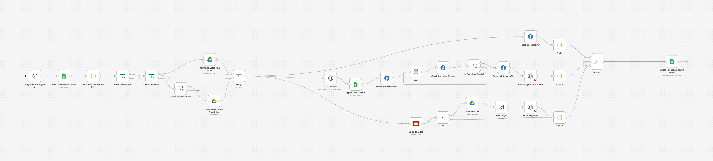
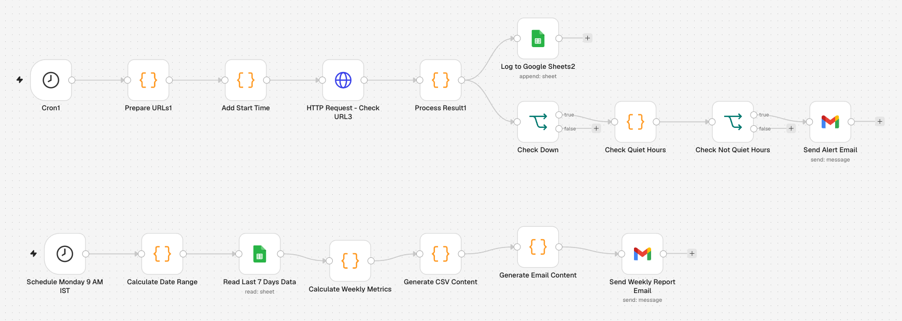
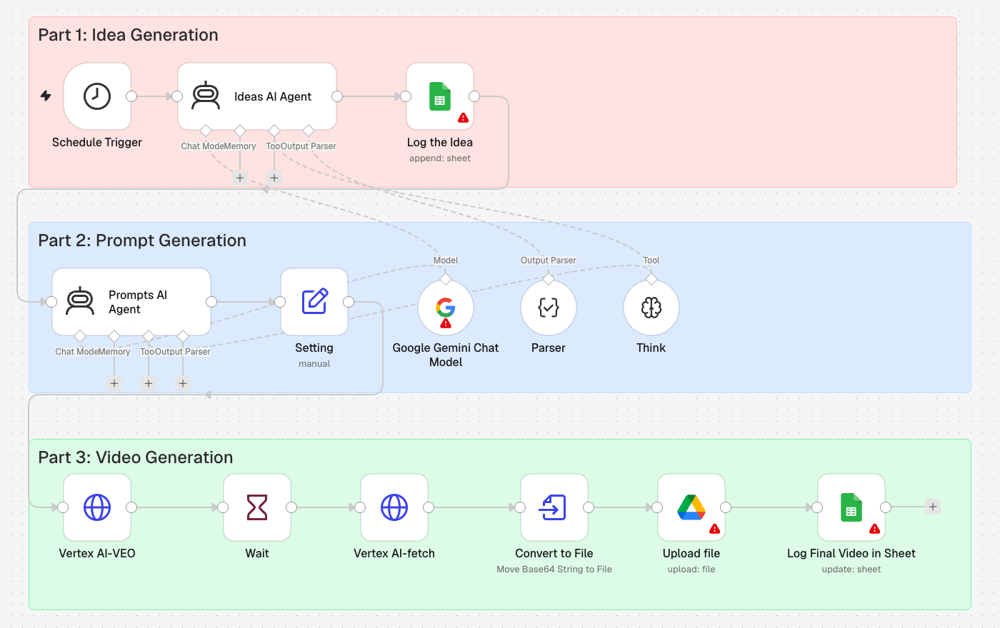
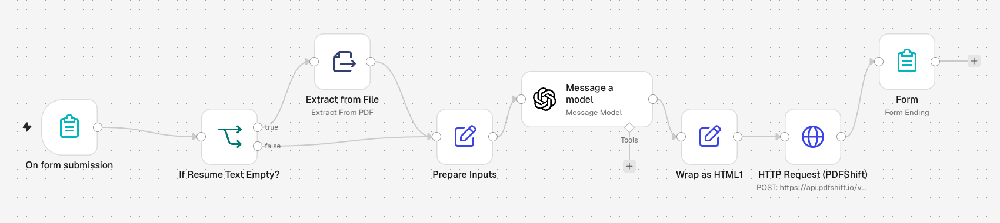
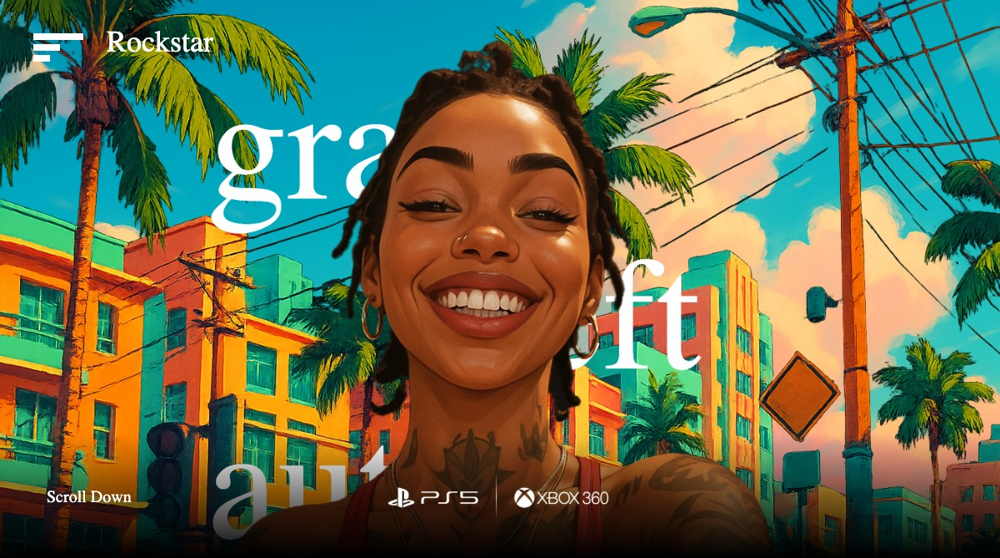

Freelance AI automation
& integration developer
Based in India, working worldwide · —
AkashDangwal
Helping agencies and small teams stop doing repetitive work by hand. I build n8n workflows, API and webhook integrations, and small AI tools on Google Workspace, Meta, YouTube, Supabase and LLMs. One year on an agency AI team, freelance builds for agency clients.
The best way to see what I do is to look at a workflow I built, so that's next.
See the workSelected work
Social publisher Freelance

An agency with several brand accounts needed reels posted to Facebook, Instagram and YouTube at scheduled times, every day, without a person doing it.
Content managers fill one Google Sheet. The workflow checks it every minute, picks rows due in IST, pulls the video and thumbnail from Drive, publishes to all three platforms and writes the live links back onto the row.
The tricky part is Instagram. Its publish API is asynchronous, so the flow polls the media container in a wait loop until it's ready. Most naive builds fail there.
- Read schedule sheet, keep rows due now
- Download reel and thumbnail from Drive
- Facebook: upload video, build post URL
- Instagram: Cloudinary URL, create container, poll until finished, publish
- YouTube: upload, set custom thumbnail
- Write three URLs to the sheet, mark posted
Uptime monitor Personal

Two flows in one: a 15-minute health check with alerts that respect quiet hours, and a Monday report with a CSV.
Every 15 minutes it requests each URL with a timeout and redirect limit, normalises the result to Up or Down with response time and final URL, and appends it to a sheet. Downtime triggers an email, except between 11 PM and 7 AM.
- Check 10 URLs, 30 second timeout, follow redirects
- Log status, code, response time, final URL
- If down and not quiet hours, email an alert
- Monday 9 AM: uptime per site for 7 days, colour-coded HTML report plus CSV
AI video generator Personal

Topic in, finished short video out, with no one in the loop.
Two Gemini agents work in sequence: the first turns a topic into one concrete idea with a caption, the second writes a cinematic prompt for Google's Veo 3. Both return structured output so nothing downstream has to parse prose. Vertex AI renders the clip as a long-running job; the flow waits, fetches it, uploads to Drive and logs the link.
- Ideas agent: one idea, caption, scene
- Prompt agent: Veo 3 prompt
- Vertex AI: start render, wait, fetch
- Convert to file, upload to Drive, update sheet
Resume customizer Personal

A complete small product built entirely in n8n: upload a resume, paste a job description, download a tailored PDF.
The form accepts text or a PDF. Text is extracted if needed, rewritten by GPT-4.1 mini under strict no-fabrication instructions, wrapped in print-ready HTML and rendered to PDF by PDFShift. The form returns the file.
- Form: resume text or PDF, plus job description
- Extract text from PDF when needed
- Rewrite with the job's keywords, keep every real fact
- Render to PDF, hand it back
GTA VI concept page Study

A fan-made landing page built to practise cinematic web motion.
SVG mask reveal on load, layered parallax that follows the cursor, responsive layout. Not an original design and not affiliated with Rockstar, but a fair sample of what I can do with GSAP when a client needs a site next to the automation.
What I can help with
-
Workflow automation
Scheduled jobs, approvals, multi-step pipelines with retries and error handling, built in n8n. Self-hosted or n8n Cloud.
-
Integrations
Connecting the tools you already use through their APIs and webhooks: Google Workspace, Meta, YouTube, Monday.com, HubSpot, Supabase.
-
AI assistants
Chatbots, email and feedback classifiers, assistants that answer from your own documents. Claude, Gemini or OpenAI, whichever fits the job.
-
Lead generation
Leads collected from Google Maps and other sources, enriched and qualified with AI, delivered as clean rows to your sheet or CRM.
-
Internal tools and dashboards
React and TypeScript front ends on a Supabase database, for when a spreadsheet stops being enough. Also small websites and landing pages.
About
I'm Akash. For the past year I've been on the AI team at a content and SEO agency, building the automations and internal tools the team runs on. Before that I built freelance automations for an agency's clients.
At the agency that has meant n8n pipelines, Monday.com webhook integrations, Supabase databases and SQL, React and TypeScript front ends, Meta API work for social accounts, and a Google Maps lead-generation workflow with AI enrichment.
I'm finishing a BSc (Hons) in Data Science and AI at IIT Guwahati, due 2027. How I work: I ask what the result needs to look like before touching a node, build the boring parts properly, logging, retries, timezones, and hand over files you can read.
- Automation
- n8n, webhooks, REST APIs, scheduled jobs, error handling
- Integrations
- Meta Graph API, YouTube Data API, Google Workspace, Monday.com, HubSpot, Cloudinary
- AI
- Claude, Gemini, OpenAI, AI agents, RAG assistants, classifiers
- Web
- React, TypeScript, Vite, Tailwind CSS, HTML and CSS, GSAP
- Data
- Supabase, PostgreSQL and SQL, Python, Pandas, machine learning fundamentals
Contact
Tell me what your team still does by hand.
Send a short description of the process and the tools involved. I'll reply with how I'd approach it and what it would take.